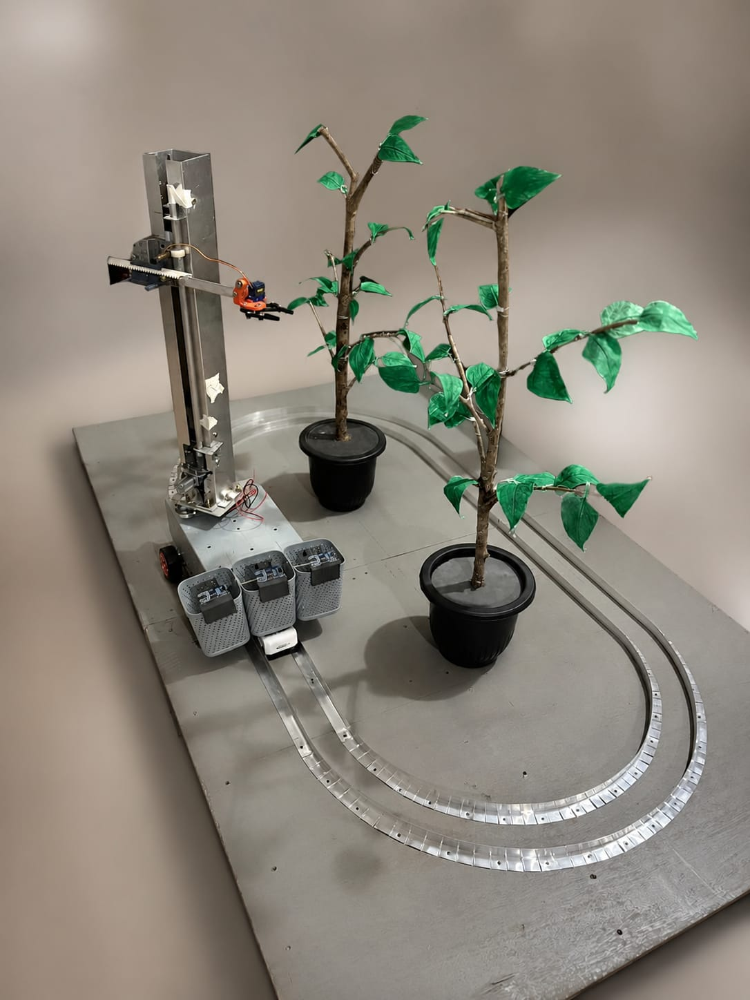
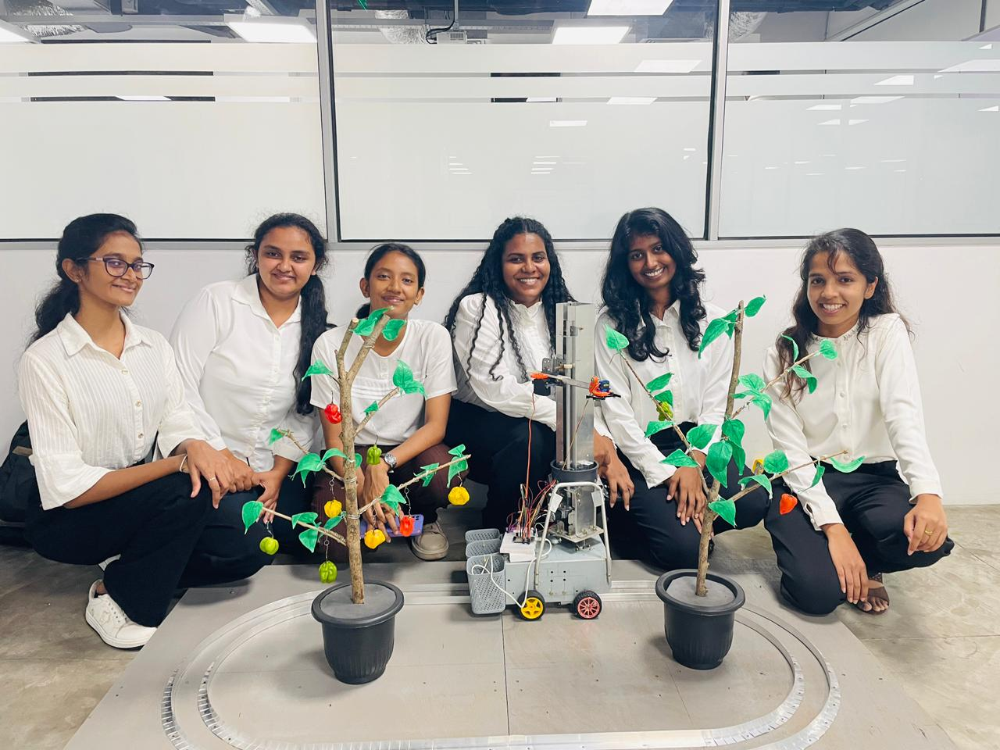

HarveXtro – Autonomous Harvesting Robot Arm
An end-to-end smart agribusiness solution that combats agricultural labor shortages by automating the selective harvesting and ripeness sorting of Scotch Bonnet chilies.

Project Overview
The HarveXtro ecosystem consists of a mobile-responsive web platform, a real-time mobile tracking app, and an edge-computing autonomous robot arm system.
Project Analysis & Dataset Collection
Before implementation, a rigorous analysis and data collection phase was conducted to ensure the system's viability and accuracy.
Comprehensive Project Analysis
Conducted in-depth feasibility studies, requirement gathering, and architectural planning before the development phase began.
Proprietary Dataset Collection
Personally managed the collection of primary image data from commercial farms across Sri Lanka to train the YOLOv8n model on real-world conditions.
1. AI & Hardware Component (The Muscles & Vision)
This core edge-computing component processes environmental inputs and physically routes harvested produce into sorting arrays.
Computer Vision Engine
Custom-trained YOLOv8n model built on a proprietary primary dataset collected from commercial farms across Sri Lanka. Operates at 8.4ms per frame with a mAP@0.50 of 0.9602.
Edge Processing Platform
Executes frame pre-processing (416x416 resizing), draws contextual bounding boxes, and calculates spatial (X, Y) center points.
Actuation Infrastructure
ESP32 drives worm gear motors on a wheeled chassis and coordinates vertical/horizontal linear actuators and high-torque servos for precision picking.
Autonomous Color Sorting
A mechanical gripper verifies multi-class maturity thresholds via sensor logic and directs chilies into dedicated Red, Green, Yellow, or Mix sorting bins.
2. Mobile Application Component (The Remote Operations Hub)
A high-performance cross-platform application constructed to give farmers live machine data visualization and remote operational controls.
Cross-Platform Architecture
Built using React Native to ensure seamless fluid rendering across Android and iOS deployments.
Live Stream Integration
Incorporates a responsive WebView layout mapping real-time camera spot-feeds from the robot arm.
Real-Time Analytical Dashboard
Uses a persistent listener to dynamically update progress charts, metrics, and logs from the database.
System Action Toggles
Exposes triggers (Start, End, Pause, Emergency Stop) that execute asynchronous machine state updates.
3. Web Platform Component (The Analytical Interface)
Platform Functionality
Serves as the high-visibility project portal showcasing development repo components, software architectures, and performance validation graphs.
Data Aggregation Utilities
Integrates structured read operations querying historical data collections to construct daily farming reports and operational summaries.
Technical Architecture Summary
| Component Layer | Core Tech Stack | Primary Functional Purpose |
|---|---|---|
| AI / CV | Python, YOLOv8n, OpenCV, TensorFlow | Pre-processing, detection, and ripeness classification. |
| Hardware & IoT | ESP32, C++, Motors, Sensors | Movement, kinematic path planning, and gripper routing. |
| Mobile & Web | React Native, JS, HTML5, CSS3 | Remote toggles, analytics, and live footage streams. |
| Infrastructure | Firebase, Node.js, Cloud Firestore | Role validation, communication buffers, and state syncing. |
Project Gallery

Prototype Hardware Architecture

Prototype Deployment & Performance Analysis
Pitch Presentation
Tip: Use your keyboard arrow keys or the buttons on the image sides
Performance Benchmarks
My Contribution
Project Coordinator & AI Developer.
- End-to-end Project Analysis & Feasibility Studies.
- Primary Dataset Collection from commercial farms.
- Core AI Model Development (YOLOv8n).
* Hardware and frontend modules contributed by other team members.